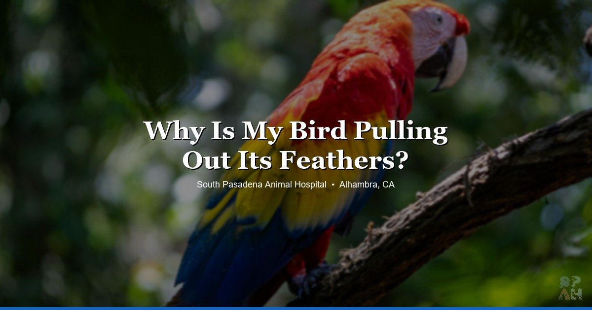

March 31, 2026 · 8 min read
Why Is My Bird Pulling Out Its Feathers?

Walking in to find bare patches on your parrot's chest is one of those moments that stops you cold. Feather plucking — or feather destructive behavior, as it's officially called — is one of the most common reasons bird owners come see us. And it's also one of the most frustrating, because figuring out why it's happening isn't always straightforward.
The cause could be medical. It could be behavioral. A lot of the time, honestly, it's both. Here's what we've learned from seeing this over and over at SPAH.
First Things First: It's a Symptom, Not a Diagnosis
This is the most important thing to understand. A bird pulling out its feathers is telling you something is wrong — but it's not telling you what. It could be anything from a skin infection to boredom to liver disease to not enough sleep. The range is wide, which is why you really need a vet to help narrow it down.
What we can tell you is that it ranges from mild barbering (chewing feather tips) all the way to plucking down to bare skin or even self-mutilation. It's more common in African greys, cockatoos, macaws, eclectus parrots, and Quakers — but we've seen it in cockatiels and budgies too. Sometimes it starts suddenly. Sometimes it creeps in over weeks.
Medical Causes (Always Rule These Out First)
This is where a lot of bird owners go wrong — they assume it's behavioral and start trying to fix the environment without ever getting a vet exam. We get it. But a surprising number of plucking birds we see have a medical component that nobody caught. Once that gets treated, the plucking drops off significantly.
Things we look for:
- Skin infections — bacterial, fungal, or yeast. More common than you'd think.
- Parasites — mites and lice are less common in indoor birds, but not impossible
- Allergies — food or environmental
- Nutritional deficiency — this is a big one. Birds on all-seed diets are almost always deficient in vitamin A, calcium, and amino acids. We see this constantly.
- Liver or kidney disease — affects skin quality and feather condition in ways that aren't obvious from the outside
- Heavy metal toxicity — zinc from cage hardware, lead from old paint or curtain weights. More common than people realize, especially in older homes.
- Thyroid problems (especially budgies and parakeets)
- PBFD (Psittacine Beak and Feather Disease) — a viral condition that causes progressive feather loss
- Pain — birds sometimes pluck the feathers directly over an area that hurts
A physical exam and bloodwork can identify or rule out most of these fairly quickly.
Behavioral Causes
If the medical workup comes back clean — or once we've addressed any medical issues — then we start looking at the environment. Parrots are complicated animals. They're smart, social, and emotionally needy in ways that a lot of first-time bird owners don't expect.
Common behavioral triggers we see:
- Boredom — this is probably the most common one. A parrot sitting in a cage with nothing to do for 8–10 hours while you're at work is a parrot that's going to find something to do with its beak. And that something is often feathers.
- Stress — moved the cage, new furniture, construction, new person in the house. Birds notice everything.
- Loneliness — parrots are flock animals. Too much time alone genuinely affects them.
- Hormonal behavior — especially during breeding season. Some birds get really worked up.
- Not enough sleep — birds need 10–12 hours of dark, quiet sleep. If the TV is on in the same room until midnight, that's a problem.
- Fear — of a new toy, a pet walking by, a sound. Sometimes it's something you wouldn't even think of.
- Habit — this is the tricky one. Sometimes plucking starts for a medical reason, the medical reason gets fixed, but the bird keeps plucking because it became a compulsive behavior. The longer it goes on, the harder this is to break.
- Over-bonding with one person — cockatoos are especially famous for this. When that person leaves, the bird falls apart.
Which Birds Are Most Prone
We see it most in:
- African Greys — incredibly smart, but also anxiety-prone. They bond deeply and stress easily.
- Cockatoos — the neediest parrots out there, honestly. They want constant attention and pluck when they don't get it.
- Macaws — need a ton of space and stimulation. A bored macaw in a small cage is a recipe for plucking.
- Eclectus — really sensitive to diet. An all-seed eclectus is almost guaranteed to develop problems.
- Quakers — hormonal plucking is very common in this species
What the Vet Visit Looks Like
When you bring in a plucking bird, we're going to be thorough. Here's what to expect:
- Physical exam — skin condition, feather quality, body weight, overall condition
- A lot of questions — about diet, cage setup, sleep schedule, who's in the house, what changed recently. This part matters more than people think.
- Bloodwork — CBC and chemistry panel to check organ function and look for infection markers
- Gram stain of the throat and vent — checking bacterial and yeast balance
- Skin scraping or culture if we suspect infection on the skin itself
- X-rays if there's any concern about internal disease
We always start with the medical side because that's what's treatable with a clear protocol. Behavioral stuff takes longer, but it's hard to fix behavior if there's an underlying medical problem driving it. A lot of the time it's some of both.
What Actually Helps
Depends entirely on the cause, but here are the things that tend to make the biggest difference:
- Diet change — switching from seeds to a pellet-based diet with fresh vegetables and some fruit. This alone can dramatically improve feather quality. If your bird has been on an all-seed diet, this is step one.
- Medication if there's a medical cause — antibiotics, antifungals, anti-parasitics, whatever's needed
- Foraging and enrichment — foraging toys, puzzle feeders, rotating toys weekly, safe chew materials like palm leaves and natural wood. The goal is to give that beak something else to do.
- Better sleep — 10–12 hours of uninterrupted darkness in a quiet room. Cover the cage. This sounds simple but it's a game changer for a lot of birds.
- More interaction — sometimes the answer really is just spending more time with your bird. A second bird can help in some cases, but not always — sometimes it adds stress instead.
- Collar or vest — for severe self-mutilation cases, temporarily, while we address the root cause. Nobody wants this to be the long-term solution.
- Positive reinforcement — reward the bird when they're NOT plucking. Try not to react when they do pluck — negative attention is still attention.
One honest thing we'll tell you: if plucking has been going on for years, some follicles may be permanently damaged. Feathers might not fully grow back even after everything else is resolved. That's why early intervention really matters here. The sooner you address it, the better the outcome.
What NOT to Do
- Don't spray deterrents on feathers — bitter apple doesn't fix the reason they're plucking and usually just stresses them out more
- Don't yell at them — you'll just teach them that plucking gets a reaction, which makes it worse
- Don't assume it's "just behavioral" without bloodwork — you'd be surprised how often there's a medical component
- Don't wait months hoping it stops — the longer plucking goes on, the harder it is to break. Weeks become habits. Habits become permanent.
Feather plucking is tough to deal with, but it's not hopeless. Start with a vet visit, get the medical side sorted, then work on environment and enrichment. A lot of birds improve significantly with the right approach. We see birds of all kinds at our Alhambra clinic and we're happy to help figure out what's going on. Check our pricing page for exam costs.